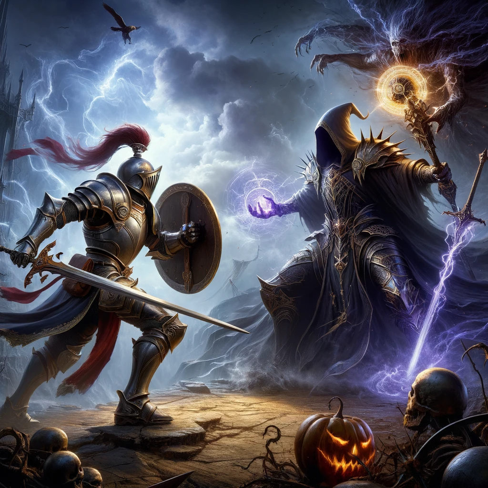
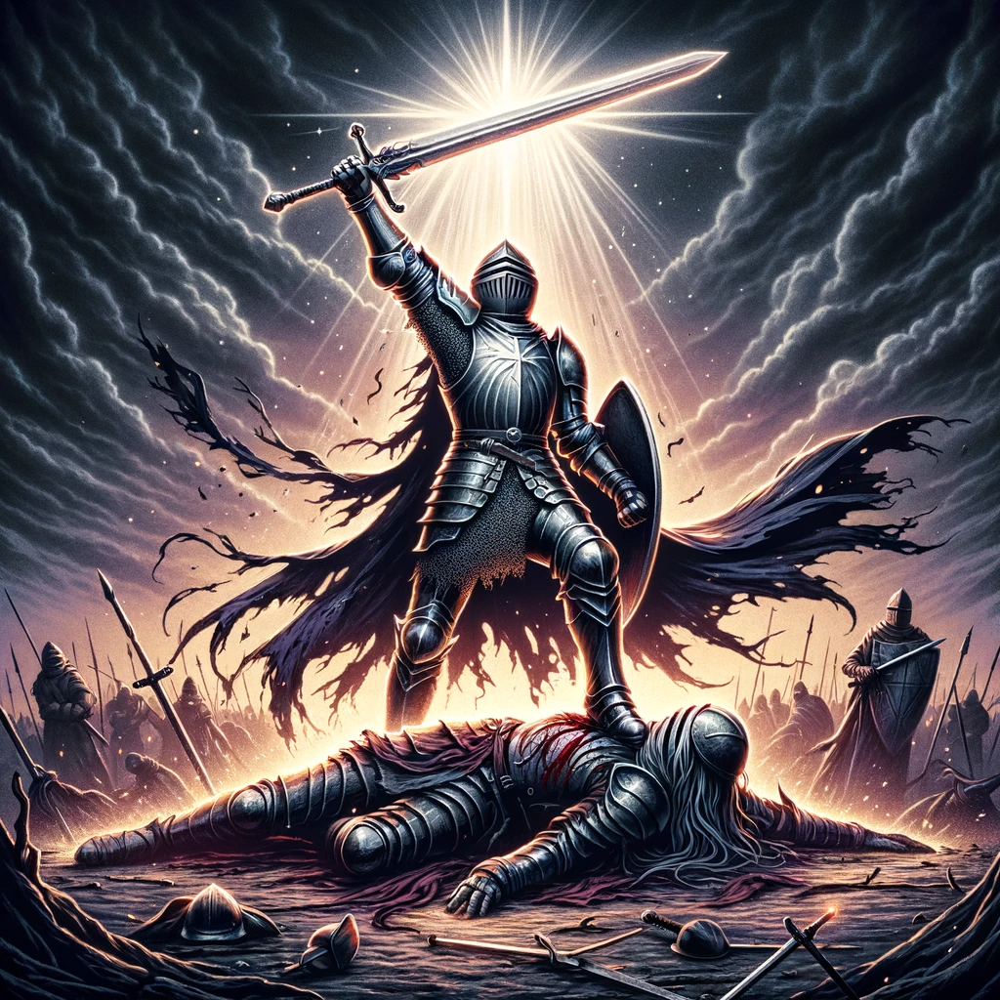

Clash of Steel and Sorcery: The Ultimate Stand
In the midst of a realm torn asunder by chaos, you stand as the last bastion of hope. Before you, the Warlock looms, a figure of dark power, his hands ablaze with malevolent energy. As he summons the forbidden arts, your shield and sword become symbols of defiance against his onslaught.
The air crackles with arcane fury as he hurls eldritch bolts towards you. Each one you deflect with your shield sends shockwaves of power rippling through the air. With every step forward, you embody the unyielding spirit of a true Knight, countering his dark sorcery with your indomitable will and martial mastery. The Warlock, a sorcerer of immense power, begins to realize that he has underestimated the heart of a warrior dedicated to the light.
Sensing a pivotal moment in the battle, you summon all your courage and strength for a final charge. The Warlock's eyes widen in shock as you break through his magical barrage, a beacon of valor in the darkness. With a battle cry that echoes the courage of fallen heroes, your sword arcs through the air with lethal precision. It finds its target, shattering the Warlock's defenses in a resounding clang of steel against dark magic.
As the Warlock stumbles and falls, his reign of terror comes to an abrupt end. The dark energy that once crackled in his grasp dissipates, leaving nothing but a defeated foe before you. In this moment of victory, you stand tall, not just as a Knight, but as a protector of all that is good and just in the realm. Your triumph is not merely a personal feat; it is a victory for every soul that clings to hope in a world shadowed by darkness.
The tale of your epic confrontation with the Warlock, a battle where steel met sorcery and courage overcame darkness, will be told throughout the ages. You have defended the realm, proving once again that even in the darkest of times, the light of valor will always prevail.